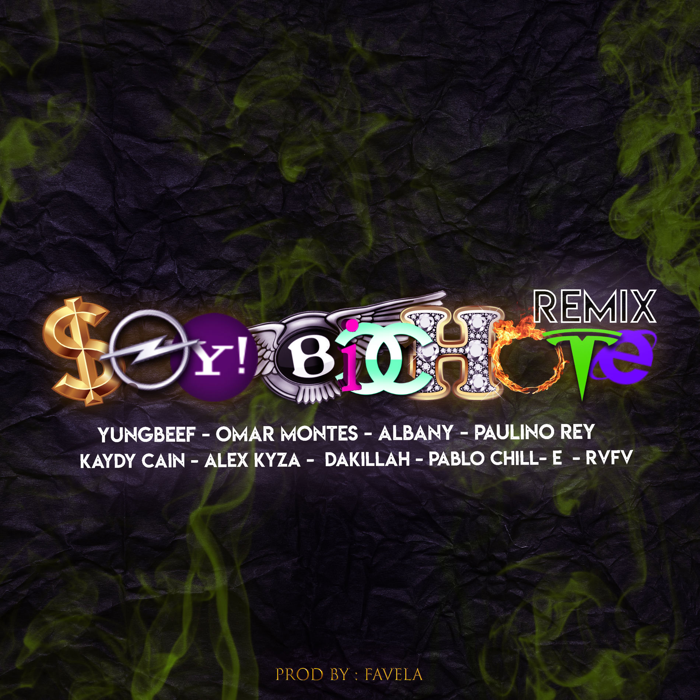
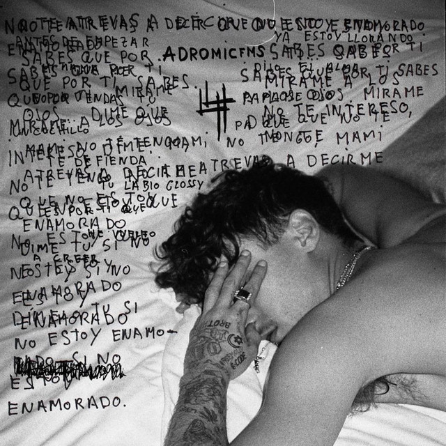
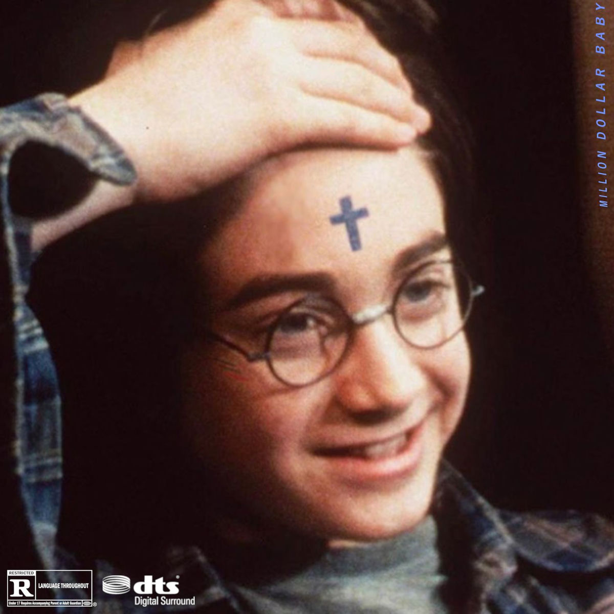

Mi Top 3 para empezar...

¿Qué es "La Vendición"?
La Vendicion Records es un sello discográfico independiente de música urbana en España. Fue fundado en diciembre de 2015 por el artista Yung Beef (Fernando Gálvez Gómez), y comenzó a operar de forma oficial a principios de 2016. Nació como un proyecto autogestionado y un refugio creativo frente a las grandes multinacionales de la industria musical.
- 2016 — Fundación y Temporada AW16: Creación oficial de la disquera. Lanzamiento de los primeros bloques masivos de mixtapes con artistas como Ms. Nina, La Mafia del Amor y Khaled.
- 2017 — Temporada SS17: Lanzamiento simultáneo de 18 nuevos trabajos discográficos, consolidando el formato de estreno por oleadas de The Medizine.
- 2017-2018 — Expansión del Sonido: Época de diversificación hacia el trap, reguetón underground y R&B, integrando a nuevos exponentes de la escena hispanohablante como Albany y Soto Asa.
- 2020 — Greatest Hits y Vol. 1: Publicación de recopilatorios masivos de temporada y el álbum conceptual La Vendicion Vol. 1.2025 - 2026 (Consolidación y Nuevas Generaciones): Lanzamiento de La Vendicion Vol. 2 "SUMMER EDITION" y el proyecto La Hermandad, dando espacio a una nueva generación de artistas urbanos.
Escuchar La Vendicion Records te permite conectar con un sello independiente de música urbana que prioriza la libertad creativa, la autenticidad callejera y los sonidos marginales o alternativos frente a las grandes discográficas comerciales.
Albums que te sugiero para entender el concepto

A.D.R.O.M.I.C.F.M.S 4
Lanzado en 2018 es pilar fundamental del trap en español. Funciona como una obra oscura, madura y melancólica que mezcla lujo, dolor personal y la crudeza de la calle con producciones estelares de Steve Lean y Brodinski.
El público aceptó ADROMICFMS 4 de Yung Beef como una obra de culto cruda y sincera. Se convirtió en un pilar clave del trap en español, consolidando al artista en la cima del underground con un sonido oscuro, melancólico y de gran impacto cultural

Million Dollar Baby
Lanzado en marzo de 2019, es un EP de siete temas producido principalmente por Limabeatz (Marvin Cruz). Marca el regreso del rapero tras su paso por prisión, combinando crudeza emocional, barras de trap clásico y sonidos cercanos al funk carioca.
Marcó un antes y un después, funcionando como un "nuevo comienzo" artístico donde demostró madurez lírica sin perder su esencia callejera.
La Vendicion Vol. 2 "Summer Edition"
El disco mezcla reggaetón underground y trap. Explora la dualidad entre el amor, el desamor, la calle y el hedonismo. El proyecto sirve como plataforma para impulsar a una nueva camada de talentos urbanos junto a figuras clave del sello y artistas mexicanos como EZYA, Doony Graff y Yeyo.
Combina bases de perreo callejero con matices melódicos, oscuros y sensuales. Al reunir a tantos productores y artistas (como Doony Graff, GlorySixVain y Raúl Clyde), el disco funciona como una muestra de la escena actual del sello aunque a veces pierda uniformidad.
Actualidad
¿Cuál es el futuro de La Vendición?
Actualmente La Vendición goza de reciente popularidad debido al exitoso INFIERNO Festival, en donde por primera vez estuvo Gucci Mane en territorio español.
Infierno Festival 2026 tuvo dos grandes referencias: la quinta edición del Infierno Festival en España (celebrado en Salobreña a finales de junio con gran éxito de asistencia y tres escenarios), y en México la realización del primer Festival Infierno Azteca el 19 de julio en el Centro Histórico de la CDMX.
Lanzados por La Vendición Records, tanto Solidfinesse 3 ($F Verano Mix Vol. 3 de Xiyo y Fernandezz) como La Vendición Vol. 3 "Summer Edition" encapsulan el sonido urbano underground del sello. El primero destaca por su enfoque de autoría propia y frescura estival, mientras que el segundo funciona como un masivo y ecléctico escaparate colectivo del sello.
El futuro del sello se orienta hacia la consolidación de nuevas promesas como La Wakely y el lanzamiento de plataformas propias de distribución directa como La Vendición 9K. Tras cumplir una década de historia, el colectivo mantiene su esencia underground mientras expande su sonido hacia nuevos géneros y renovadas generaciones de artistas urbanos.